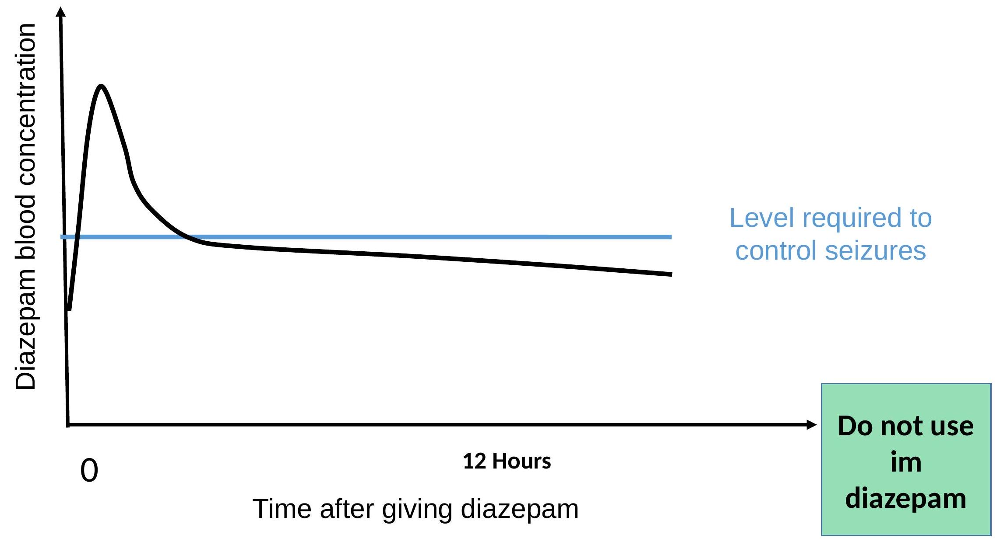

2. CONVULSIVE DISORDERS
Childhood Seizures
A seizure is a sudden, episodic, involuntary alteration in consciousness, motor activity, behaviour, sensation, or autonomic function.
Causes of Seizures
The following are the causes of seizures:
- Excessive neuronal discharges (epilepsy)
- Hyper-excitable nerve cells that surpass the seizure threshold
- Neurons over-firing without regard to stimuli or need
Clinical manifestations: Depends on the type
e.g.
- Simple partial - local motor, sensory, psychic & somatic manifestations. E.g. hallucinations, anxiety, paresthesias. [2]
- Complex partial: Aura, Anxiety, fear, Déjà Vu, unusual tastes, Visual/ auditory hallucinations, disturbed consciousness. [4]
- Automatisms - repeated non- purposeful action e.g. lip smacking, chewing, sucking, uttering same word . [11]
- Tonic/ clonic - grandmal seizures. Manifested in typical phases of epileptic attack: prodromal, Aura, Tonic, clonic, Postictal/ post convulsive state. [14, 5]
- Absence/ petit mal: Appear around 6th birthday & disappearance in adolescence transient loss of consciousness i.e. cessation of current activity. [1] Stare at space. Loss of muscle tone - things drop from hand and head droop,Lip smacking occur. [1]
- Febrile seizures: Type of clonic/ tonic .Associated with increase temperature. 39.0C at 6m-5yrs .The family history vital ,Frequently accompany infections e.g. URTI, pneumonia, otitis media etc.
- Infantile spasms: Salaam seizures being at 3 month of age. x 2 in males .Infants head sudden drop forward while arms & legs flexed, eyes roll upward/ downward. [3, 6] Cry out turn pale or cyanotic/ flushed and loss of consciousness may result. [3]
Diagnostic Findings of Seizures
EEG results help differentiate epileptic from no epileptic seizures. Each seizure has a characteristic EEG tracing. [2]
Nursing Diagnoses of Seizures
- Ineffective airway clearance
- Risk for injury
- Disturbed sensory perception (tactile)
Monitor vital signs to determine baseline values and detect any changes.
Monitor neurologic status to detect changes.
Stay with the child during a seizure to prevent injury.
Move the child to a flat surface to prevent falling.
Place the child on their side to allow saliva to drain out to ensure a patent airway.
Do not try to interrupt the seizure to promote safety.
Gently support the head and keep the child's hands from inflicting self-harm, but do not restrain the child to prevent injury.
Reduce external stimuli to avoid worsening seizure activity.
Loosen tight clothing to promote comfort.
Record seizure activity. Description of seizure activity helps to diagnose the type, which will aid in developing a treatment plan.
Pad the crib or bed to prevent injury.
Monitor serum levels of anticonvulsant medications, such as diazepam 0.5 mgs per rectal or 0.3 mgs per i.v or phenobarbitone $20 \mathrm{mg} / \mathrm{kg}$ stat; further $5-10 \mathrm{mg} / \mathrm{kg}$ can be given within 24 hours of the loading dose with maintenance doses of $5 \mathrm{mg} / \mathrm{kg}$ daily.to prevent toxicity or sub therapeutic levels.
N/B Do not use tongue blades tongue blades during seizure activity. This may cause trauma to the mouth and result in airway obstruction from an aspirated tooth or laryngospasm.
Giving rectal diazepam
$4-5 \mathrm{~cm}$ inside the anal margin All of the barrel of a 2 mls syringe and nearly all of a 1 ml syringe
Diazepam
After iv ( $0.3 \mathrm{mg} / \mathrm{kg}$ ) or $\operatorname{pr}(0.5 \mathrm{mg} / \mathrm{kg})$ administration adequate levels are reliably achieved within 5 mins but half of the drug is not cleared from circulation in 12 hours. [37, 39]
Diazepam - side effects
- Respiratory depression
After a single (correct) dose of diazepam up to $10 \%$ of children have discernable respiratory depression.
Give the correct dose $0.3 \mathrm{mg} / \mathrm{kg}$ iv and $0.5 \mathrm{mg} / \mathrm{kg}$ pr
Phenobarbitone (2)
The teaching topics of seizures include the following:
- Use drugs for Controlling seizures
- Instituting safety measures during seizure activity